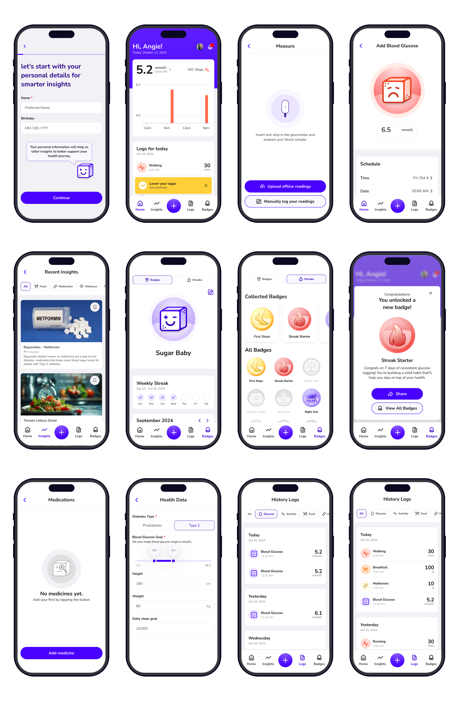

About the project
Glucofit is a mobile app for people who may be prediabetic or already diabetic to help them monitor their blood sugar level through automated glucose logging and personalized insights on food and lifestyle. The app promotes progress through fun challenges where users can earn weekly streaks and milestone badges to stay motivated and consistent toward a healthier lifestyle.
PROBLEM STATEMENT
Many prediabetic and type 2 diabetic patients struggle to manage their blood sugar levels due to a lack of personalized insights, motivation, and easy tracking methods. Existing solutions often fail to provide engaging features that encourage consistent health monitoring. As a result, patients may find it challenging to adopt healthier habits, track their progress, and stay motivated on their journey to improve their overall health and reverse their condition.
User persona

Competitor Analysis

MySugr, OneTouch, and Glucose Buddy help users track diabetes-related metrics but fall short in providing in-depth insights or a holistic approach to better understand and manage their condition. While they simplify data logging, they often lack robust tools to connect habits, such as lifestyle, food, and medication, to outcomes or offer tailored educational support. This leaves patients with limited guidance and a fragmented view of their health, making long-term diabetes management more challenging.
User Flow

Main objectives
- Automated Glucose Logging
A streamlined process of blood glucose monitoring, ensuring accurate data transfer without manual entry and maintain up-to- date records of glucose levels for better tracking and diabetes management. - Gamified Progress Tracking
By consistently logging glucose levels, meals, and activities, users can earn unique badges as rewards and tracking their progress streaks - keeping users motivated to a healthy lifestyle. - Personalized Insights
A library of curated articles from trusted medical sources where users can educate themselves about diabetes management, health trends, and lifestyle changes which makes it easier for users to revisit.
Wireframes

Branding

UI KIT

Mockup
The app is focused on habit formation, accessibility, and ease of use. The UI avoids unnecessary complexity by prioritizing clear data visualization and intuitive navigation, ensuring users can quickly log glucose levels, meals, and activities without friction. The UX is structured around effortless tracking and personalized insights, making health management feel actionable rather than overwhelming. To encourage long-term engagement, we implemented gamification elements like badges and streaks, reinforcing consistency without making tracking feel like a chore. Every design choice—from hierarchy in information display to the balance between motivation and usability—was made to support users in maintaining sustainable health habits.
My role and Learnings
As the UI/UX designer assigned on the badges, streaks, and onboarding experience, I focused on creating an experience that encourages consistency without pressure. I illustrated the badges, designed the onboarding flow, and developed the app’s branding and logo, ensuring a cohesive and engaging visual identity. Beyond UI design, I was also involved in market research, user interviews, and user testing, which helped shape key UX decisions. Insights from these studies informed how we structured onboarding to reduce friction, how we refined the badge system to reinforce positive behaviors, and how we adjusted visual hierarchy to improve readability.